Results plots for Focused region with densely-packed signals#
# This stuff only actually gets used in this cell:
from matplotlib import pyplot as plt
# Use the style file defined in the repository route
plt.style.use('../../paper.mplstyle')
# This is the folder where results plots will be saved:
paper_plots_dir = '../../paper/images/inpainting_results'
# The common and plotting utils modules are in the parent
# `search` directory
# Here we add the `search` directory to the python path so we can
# do a local import
import sys
import os
parent_dir = os.path.abspath("..")
if parent_dir not in sys.path:
sys.path.insert(0, parent_dir)
# Everything plotted in this notebook is done using these helper modules
import plotting_utils
from common_utils import get_results_inpainting as get_results, get_results_zero_latency
/Users/gareth/miniconda3/envs/env_lisa_premerger_sangria/lib/python3.11/site-packages/pycbc/types/array.py:36: UserWarning: Wswiglal-redir-stdio:
SWIGLAL standard output/error redirection is enabled in IPython.
This may lead to performance penalties. To disable locally, use:
with lal.no_swig_redirect_standard_output_error():
...
To disable globally, use:
lal.swig_redirect_standard_output_error(False)
Note however that this will likely lead to error messages from
LAL functions being either misdirected or lost when called from
Jupyter notebooks.
To suppress this warning, use:
import warnings
warnings.filterwarnings("ignore", "Wswiglal-redir-stdio")
import lal
import lal as _lal
times_before = [0.5, 1, 4, 7, 14]
results_noremoval = get_results(
f"results/data_runs_focused_noremoval.hdf",
filter_times_before=times_before
)
results_varremoval = get_results(
f"results/data_runs_focused_varied_removal.hdf",
filter_times_before=times_before
)
results_2hrremoval = get_results(
f"results/data_runs_psd_estimate.hdf",
filter_times_before=times_before
)
# Get the truth times
import ldc.io.hdf5 as hdfio
input_data = '../../datasets/LDC2_sangria_hm_training.hdf'
mbhb_sky = hdfio.load_array(input_data, name="sky/mbhb/cat")
truth_times_s = mbhb_sky[0]['CoalescenceTime']
# Some definitions for when signals are removed
signals_in_region = [2,3,4,5]
removal_time_s = [7200, 11*86400, 14*86400, 7200]
Variable removal and no removal - same plot#
This is quite hard to see on the same plot, so we show the same things separately in the next cells
fig_focused_predict, _ = plotting_utils.plot_around_time(
results_one=results_noremoval,
results_two=results_varremoval,
truth_times=truth_times_s,
times_before=times_before,
label_one='No Removal',
label_two='Variable Removal',
alpha_one=0.5,
start_time_offset=120,
end_time_offset=145,
width_factor=1.25
)
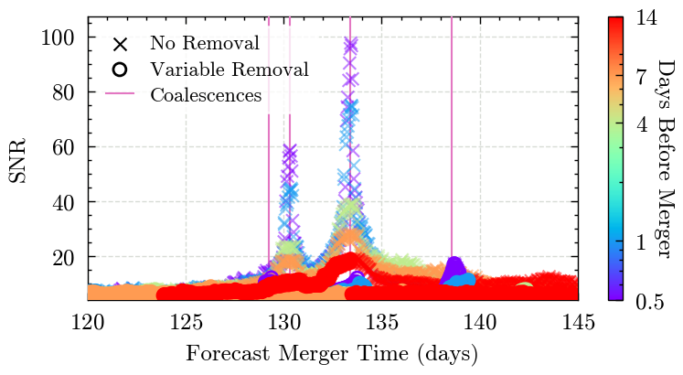
fig_focused_dataend, _ = plotting_utils.plot_around_time(
results_one=results_noremoval,
results_two=results_varremoval,
truth_times=truth_times_s,
times_before=times_before,
label_one='No Removal',
label_two='Variable Removal',
alpha_one=0.2,
start_time_offset=120,
end_time_offset=145,
width_factor=1.25,
predicted_time=False
)
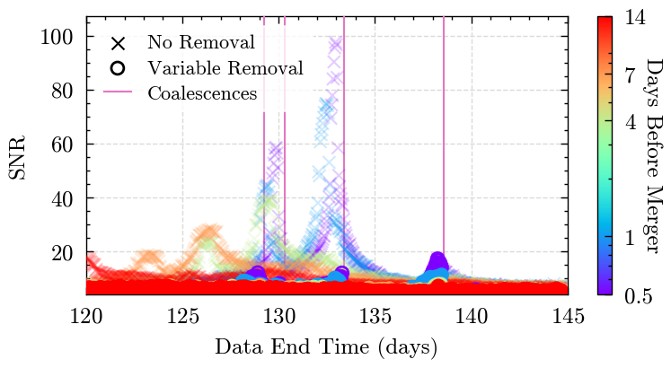
No Removal - predicted time, with upper limit to plot:#
fig_focused_predict, ax_focused_predict = plotting_utils.plot_around_time(
results_one=results_noremoval,
truth_times=truth_times_s,
times_before=times_before,
label_one='No Removal',
start_time_offset=120,
end_time_offset=145,
width_factor=1.25,
)
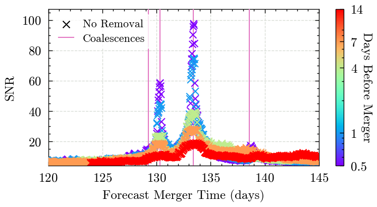
Variable removal - predicted time#
fig_focused_var_predicted, _ = plotting_utils.plot_around_time(
results_one=results_varremoval,
truth_times=truth_times_s,
times_before=times_before,
label_one='Variable Removal',
start_time_offset=110,
end_time_offset=150,
width_factor=1.25
)
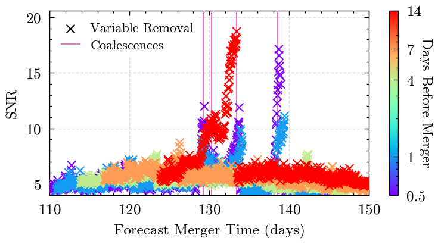
Variable removal - end time#
A better, labelled, version of this is made later to appear in the paper - that one uses filtered times-before-merger so is a bit clearer
fig_focused_var_end_time, _ = plotting_utils.plot_around_time(
results_one=results_varremoval,
truth_times=truth_times_s,
times_before=times_before,
label_one='Variable Removal',
predicted_time=False,
start_time_offset=110,
end_time_offset=145,
width_factor=1.25
)
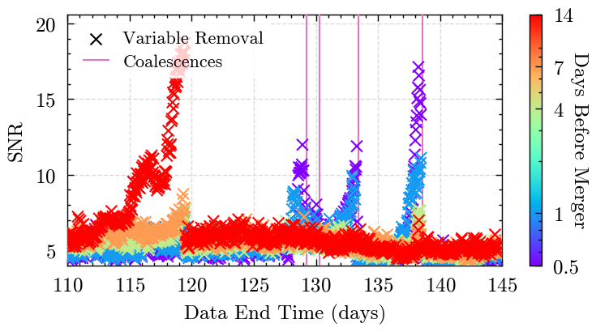
No removal - predicted time#
fig_focused_no_predicted, _ = plotting_utils.plot_around_time(
results_one=results_noremoval,
times_before=times_before,
truth_times=truth_times_s,
label_one='Results Without Removal',
marker_one='o',
start_time_offset=125,
end_time_offset=140,
width_factor=1.25
)
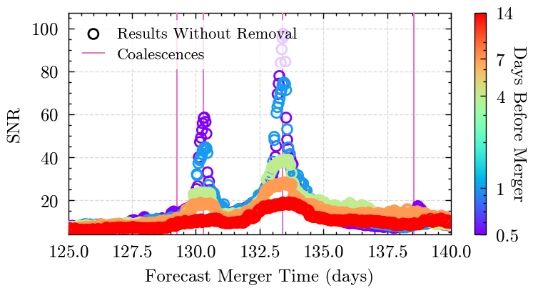
No removal - data end time#
fig_focused_no_dataend, _ = plotting_utils.plot_around_time(
results_one=results_noremoval,
times_before=times_before,
truth_times=truth_times_s,
label_one='Results Without Removal',
predicted_time=False,
marker_one='o',
start_time_offset=110,
end_time_offset=145,
width_factor=1.25
)
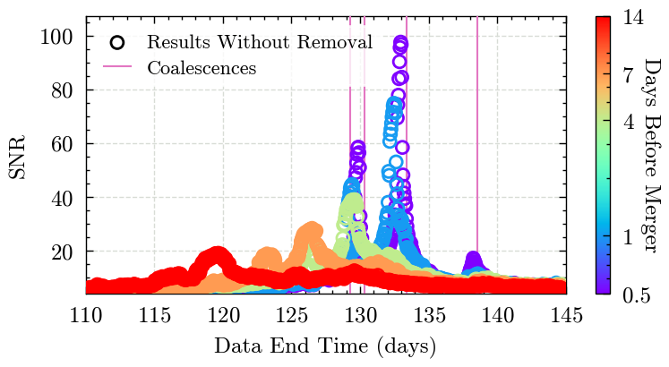
Removal 2 hours before merger - predicted time#
fig_focused_2hr_predicted, _ = plotting_utils.plot_around_time(
results_one=results_2hrremoval,
times_before=times_before,
truth_times=truth_times_s,
label_one='Removal 2 hours before merger',
marker_one='o',
start_time_offset=125,
end_time_offset=140,
width_factor=1.25
)
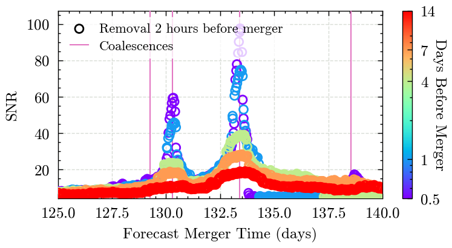
fig_focused_predict, ax_focused_predict = plotting_utils.plot_around_time(
results_one=results_noremoval,
truth_times=truth_times_s,
times_before=times_before,
label_one='No Removal',
start_time_offset=120,
end_time_offset=145,
legend_loc='upper right'
)
ax_focused_predict[0].set_ylim(top=30)
fig_focused_predict.savefig(f'{paper_plots_dir}/figure_9a_focused_region_no_removal.png')
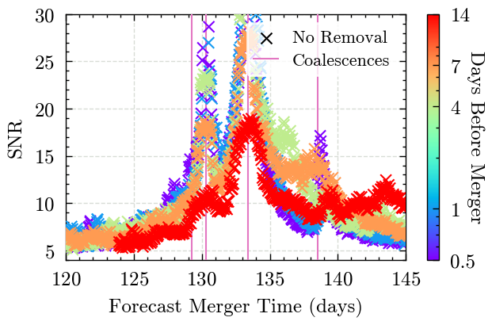
fig_focused_predict, ax_focused_predict = plotting_utils.plot_around_time(
results_one=results_2hrremoval,
truth_times=truth_times_s,
times_before=times_before,
label_one='Merger Removal',
marker_one='o',
legend_loc='upper right',
start_time_offset=120,
end_time_offset=145,
)
ax_focused_predict[0].set_ylim(top=30)
fig_focused_predict.savefig(f'{paper_plots_dir}/figure_9b_focused_region_2hr_removal.png')
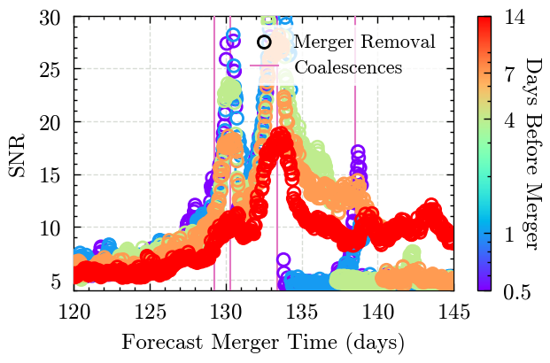
Removal 2 hours before merger - data end time#
fig_focused_2hr_dataend, _ = plotting_utils.plot_around_time(
results_one=results_2hrremoval,
times_before=times_before,
truth_times=truth_times_s,
label_one='Removal 2 hours before merger',
predicted_time=False,
marker_one='o',
start_time_offset=110,
end_time_offset=145,
width_factor=1.25
)
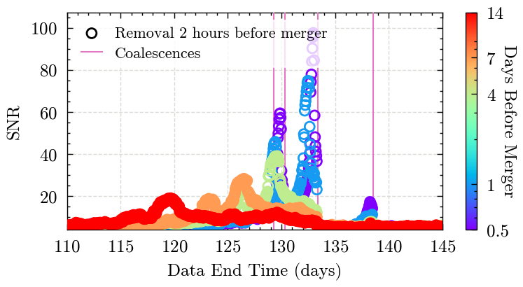
The focused region section main plot - variable removal end times, with labels#
fig_focused_dataend, (ax_focused_dataend, labels, lines) = plotting_utils.plot_around_time(
results_one=results_varremoval,
times_before=times_before,
truth_times=truth_times_s,
label_one='Search Results',
predicted_time=False,
start_time_offset=110,
end_time_offset=145,
width_factor=1.5
)
# Add lines for when the signals are removed from the data
lines.append(ax_focused_dataend.axvline(
0,
c='k',
linestyle=':'
))
labels.append('Signal Removal')
# ax_focused_dataend.legend(loc='upper left')
for signal_number, time_before in zip(signals_in_region, removal_time_s):
ax_focused_dataend.axvline(
(truth_times_s[signal_number] - time_before) / 86400,
c='k',
linestyle=':',
zorder=100
)
ax_focused_dataend.text(
(truth_times_s[signal_number] - time_before + 1800) / 86400,
16-signal_number*1.5,
f'$\leftarrow$ Signal {signal_number}',
fontsize=8,
zorder=40,
bbox=dict(facecolor='white', alpha=0.8, edgecolor='none',boxstyle='square,pad=0')
)
leg = ax_focused_dataend.legend(
handles=lines,
labels=labels,
loc='upper center',
framealpha=1,
frameon=True,
)
leg.set_zorder(150)
fig_focused_dataend.savefig(f'plots/focused_results_data_end_time.pdf')
fig_focused_dataend.savefig(f'{paper_plots_dir}/figure_10_focused_region_variable_removal.png')
---------------------------------------------------------------------------
FileNotFoundError Traceback (most recent call last)
Cell In[16], line 42
34 leg = ax_focused_dataend.legend(
35 handles=lines,
36 labels=labels,
(...) 39 frameon=True,
40 )
41 leg.set_zorder(150)
---> 42 fig_focused_dataend.savefig(f'plots/focused_results_data_end_time.pdf')
43 fig_focused_dataend.savefig(f'{paper_plots_dir}/figure_10_focused_region_variable_removal.png')
File ~/miniconda3/envs/env_lisa_premerger_sangria/lib/python3.11/site-packages/matplotlib/figure.py:3490, in Figure.savefig(self, fname, transparent, **kwargs)
3488 for ax in self.axes:
3489 _recursively_make_axes_transparent(stack, ax)
-> 3490 self.canvas.print_figure(fname, **kwargs)
File ~/miniconda3/envs/env_lisa_premerger_sangria/lib/python3.11/site-packages/matplotlib/backend_bases.py:2186, in FigureCanvasBase.print_figure(self, filename, dpi, facecolor, edgecolor, orientation, format, bbox_inches, pad_inches, bbox_extra_artists, backend, **kwargs)
2182 try:
2183 # _get_renderer may change the figure dpi (as vector formats
2184 # force the figure dpi to 72), so we need to set it again here.
2185 with cbook._setattr_cm(self.figure, dpi=dpi):
-> 2186 result = print_method(
2187 filename,
2188 facecolor=facecolor,
2189 edgecolor=edgecolor,
2190 orientation=orientation,
2191 bbox_inches_restore=_bbox_inches_restore,
2192 **kwargs)
2193 finally:
2194 if bbox_inches and restore_bbox:
File ~/miniconda3/envs/env_lisa_premerger_sangria/lib/python3.11/site-packages/matplotlib/backend_bases.py:2042, in FigureCanvasBase._switch_canvas_and_return_print_method.<locals>.<lambda>(*args, **kwargs)
2038 optional_kws = { # Passed by print_figure for other renderers.
2039 "dpi", "facecolor", "edgecolor", "orientation",
2040 "bbox_inches_restore"}
2041 skip = optional_kws - {*inspect.signature(meth).parameters}
-> 2042 print_method = functools.wraps(meth)(lambda *args, **kwargs: meth(
2043 *args, **{k: v for k, v in kwargs.items() if k not in skip}))
2044 else: # Let third-parties do as they see fit.
2045 print_method = meth
File ~/miniconda3/envs/env_lisa_premerger_sangria/lib/python3.11/site-packages/matplotlib/backends/backend_pdf.py:2779, in FigureCanvasPdf.print_pdf(self, filename, bbox_inches_restore, metadata)
2777 file = filename._ensure_file()
2778 else:
-> 2779 file = PdfFile(filename, metadata=metadata)
2780 try:
2781 file.newPage(width, height)
File ~/miniconda3/envs/env_lisa_premerger_sangria/lib/python3.11/site-packages/matplotlib/backends/backend_pdf.py:687, in PdfFile.__init__(self, filename, metadata)
685 self.original_file_like = None
686 self.tell_base = 0
--> 687 fh, opened = cbook.to_filehandle(filename, "wb", return_opened=True)
688 if not opened:
689 try:
File ~/miniconda3/envs/env_lisa_premerger_sangria/lib/python3.11/site-packages/matplotlib/cbook.py:546, in to_filehandle(fname, flag, return_opened, encoding)
544 fh = bz2.BZ2File(fname, flag)
545 else:
--> 546 fh = open(fname, flag, encoding=encoding)
547 opened = True
548 elif hasattr(fname, 'seek'):
FileNotFoundError: [Errno 2] No such file or directory: 'plots/focused_results_data_end_time.pdf'
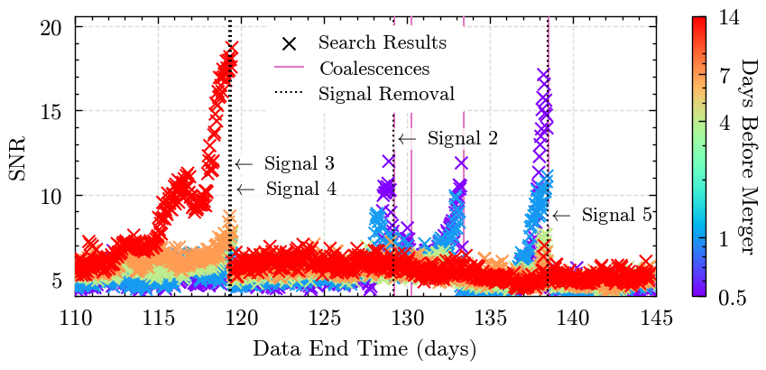
Make a table of removed times (days) to be added to the paper#
table_str = """\\begin{tabular}{|cc|cc|}
\\hline
\\multicolumn{2}{|c|}{Signal} & \\multicolumn{2}{c|}{Removal Time} \\\\
\\hline
Number & Time (days) & Offset & Time (days) \\\\
\\hline
"""
for signal_number, time_before in zip(signals_in_region, removal_time_s):
if time_before > 86400:
removal_time_str = f"{time_before / 86400:.0f} days"
else:
removal_time_str = f"{time_before / 3600:.0f} hours"
truth_time_days = truth_times_s[signal_number] / 86400
table_str += f"{signal_number} & {truth_time_days:.1f} & {removal_time_str} & {truth_time_days - time_before/86400:.1f} \\\\\n"
table_str += """\\hline
\\end{tabular}
"""
print(table_str)
with open('../../paper/tables/table_4_focused_removal_times.tex', 'w') as frt_table:
frt_table.write(table_str)
\begin{tabular}{|cc|cc|}
\hline
\multicolumn{2}{|c|}{Signal} & \multicolumn{2}{c|}{Removal Time} \\
\hline
Number & Time (days) & Offset & Time (days) \\
\hline
2 & 129.3 & 2 hours & 129.2 \\
3 & 130.3 & 11 days & 119.3 \\
4 & 133.4 & 14 days & 119.4 \\
5 & 138.6 & 2 hours & 138.5 \\
\hline
\end{tabular}
Now make some statements about the relative times when a signal is removed, e.g. signal N is removed x days before/after signal M merges
for signal_number_1, time_before_1 in zip(signals_in_region, removal_time_s):
for signal_number_2, time_before_2 in zip(signals_in_region, removal_time_s):
offset_merger = (truth_times_s[signal_number_2]) - (truth_times_s[signal_number_1] - time_before_1)
if offset_merger < 0:
offset_merger_removed_str = f'{-offset_merger / 86400:.2f} days after'
else:
offset_merger_removed_str = f'{offset_merger / 86400:.2f} days before'
print(f"Signal {signal_number_1} is removed {offset_merger_removed_str} signal {signal_number_2} merges")
if signal_number_1 >= signal_number_2: continue
offset = (truth_times_s[signal_number_2] - time_before_2) - (truth_times_s[signal_number_1] - time_before_1)
if offset < 0:
offset_removed_str = f'{-offset / 86400:.2f} days after'
else:
offset_removed_str = f'{offset / 86400:.2f} days before'
print(f"Signal {signal_number_1} is removed {offset_removed_str} signal {signal_number_2} is removed")
Signal 2 is removed 0.08 days before signal 2 merges
Signal 2 is removed 1.13 days before signal 3 merges
Signal 2 is removed 9.87 days after signal 3 is removed
Signal 2 is removed 4.24 days before signal 4 merges
Signal 2 is removed 9.76 days after signal 4 is removed
Signal 2 is removed 9.38 days before signal 5 merges
Signal 2 is removed 9.30 days before signal 5 is removed
Signal 3 is removed 9.95 days before signal 2 merges
Signal 3 is removed 11.00 days before signal 3 merges
Signal 3 is removed 14.11 days before signal 4 merges
Signal 3 is removed 0.11 days before signal 4 is removed
Signal 3 is removed 19.25 days before signal 5 merges
Signal 3 is removed 19.16 days before signal 5 is removed
Signal 4 is removed 9.84 days before signal 2 merges
Signal 4 is removed 10.89 days before signal 3 merges
Signal 4 is removed 14.00 days before signal 4 merges
Signal 4 is removed 19.14 days before signal 5 merges
Signal 4 is removed 19.06 days before signal 5 is removed
Signal 5 is removed 9.21 days after signal 2 merges
Signal 5 is removed 8.16 days after signal 3 merges
Signal 5 is removed 5.06 days after signal 4 merges
Signal 5 is removed 0.08 days before signal 5 merges
Gaps#
Now we think about gaps - lets imagine that there are gaps before signal zero. Inpainting rides them out, the zero latency filter doesn’t.
import numpy as np
# For signal zero - plot the results filtered for the closest to the predicted merger time
example_signal = 0
# Get the zero-latency results for this signal
results_zero_latency = get_results_zero_latency(
"../zero_latency/results/psd_estimate/data_runs_raw_{time_before}_results.hdf",
times_before
)
# Filter the zero latency results to only use the closest point for each
zl_results_data_end_time = []
zl_results_snr = []
for t_before in times_before:
this_t = results_zero_latency['time_before'] == t_before
closest_match = np.argmin(
abs(results_zero_latency['time'][this_t] - truth_times_s[example_signal])
)
zl_results_data_end_time.append(results_zero_latency['data_end_time'][this_t][closest_match])
zl_results_snr.append(results_zero_latency['snr'][this_t][closest_match])
zl_results_data_end_time = np.array(zl_results_data_end_time)
zl_results_snr = np.array(zl_results_snr)
# We need to get the inpainting results again which have not been filtered for particular times-before-merger
results_estimate_all = get_results(
f"results/data_runs_psd_estimate.hdf"
)
ip_times_before = np.unique(results_estimate_all['time_before'])
ip_results_data_end_time = []
ip_results_snr = []
for t_before in ip_times_before:
this_t = results_estimate_all['time_before'] == t_before
closest_match = np.argmin(
abs(results_estimate_all['time'][this_t] - truth_times_s[example_signal])
)
ip_results_data_end_time.append(results_estimate_all['data_end_time'][this_t][closest_match])
ip_results_snr.append(results_estimate_all['snr'][this_t][closest_match])
ip_results_data_end_time = np.array(ip_results_data_end_time)
ip_results_snr = np.array(ip_results_snr)
# A special run around signal 0 which has gaps inserted
inpainting_gaps_results = get_results(
"results/data_runs_signal_0_gaps.hdf",
)
ipg_times_before = np.unique(inpainting_gaps_results['time_before'])
ipg_results_data_end_time = []
ipg_results_snr = []
for t_before in ip_times_before:
this_t = inpainting_gaps_results['time_before'] == t_before
closest_match = np.argmin(
abs(inpainting_gaps_results['time'][this_t] - truth_times_s[example_signal])
)
ipg_results_data_end_time.append(inpainting_gaps_results['data_end_time'][this_t][closest_match])
ipg_results_snr.append(inpainting_gaps_results['snr'][this_t][closest_match])
ipg_results_data_end_time = np.array(ipg_results_data_end_time)
ipg_results_snr = np.array(ipg_results_snr)
width = plt.rcParams["figure.figsize"][0]
height = plt.rcParams["figure.figsize"][1]
fig, ax = plt.subplots(1, figsize=(width, height),)
ax.plot(
(ip_results_data_end_time - truth_times_s[example_signal]) / 86400,
ip_results_snr,
linewidth=1.25,
color='tab:blue',
label='Inpainting Results',
zorder=10
)
ax.plot(
(ipg_results_data_end_time - truth_times_s[example_signal]) / 86400,
ipg_results_snr,
linewidth=1.25,
color='tab:orange',
linestyle='--',
label='Inpainting with Gaps',
zorder=8
)
ax.scatter(
(zl_results_data_end_time - truth_times_s[example_signal]) / 86400,
zl_results_snr,
edgecolor='k',
marker='o',
facecolors='none',
label='Zero Latency Results',
zorder=20
)
sm = plotting_utils.get_sm(vmin=min(times_before), vmax=max(times_before))
for time_before in times_before:
ax.axvline(
-time_before,
c=sm.to_rgba(time_before),
linestyle=':',
linewidth=1.25,
zorder=5
)
for gap in [(2.5, 1.5), (5.5, 4.5), (10.5, 9.5)]:
ax.axvspan(-gap[0], -gap[1], color='lightgray', zorder=0)
ax.axvspan(100, 100, color='lightgray', zorder=0, label='Data gaps')
ax.grid(zorder=0)
ax.set_xlim(-14.5, 0.25)
ax.legend(loc='upper left')
ax.set_ylabel('SNR')
ax.set_xlabel('Data End Time offset (days)')
fig.show()
fig.savefig(f'plots/signal_{example_signal}_end_timeline_with_gaps.pdf')
fig.savefig(f'{paper_plots_dir}/figure_8_signal_{example_signal}_timeline.png', dpi=300)
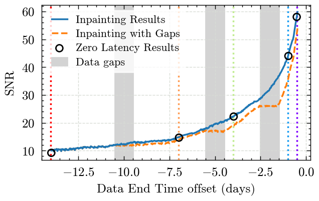
# In the paper we discuss where the signal 0 lines cross SNR of 40, let's find where this happens:
# Note that this is the hourly results, so results may vary by up to an hour (~0.04 days)
crossing_snr = 40
crossing_ip_idx = np.argwhere(ip_results_snr > crossing_snr)[-1][0]
crossing_ip_time = (ip_results_data_end_time[crossing_ip_idx] - truth_times_s[0]) / 86400
print(f'First inpainting result with SNR > {crossing_snr} at {-crossing_ip_time:.3f} days')
crossing_ipg_idx = np.argwhere(ipg_results_snr > crossing_snr)[-1][0]
crossing_ipg_time = (ipg_results_data_end_time[crossing_ipg_idx] - truth_times_s[0]) / 86400
print(f'First inpainting + gaps result with SNR > {crossing_snr} at {-crossing_ipg_time:.3f} days')
crossing_ipg_idx = np.argwhere(ipg_results_snr > crossing_snr)[-1][0]
crossing_zl_idx = np.argwhere(zl_results_snr > crossing_snr)[-1][0]
crossing_zl_time = (zl_results_data_end_time[crossing_zl_idx] - truth_times_s[0]) / 86400
print(f'First zero latency result with SNR > {crossing_snr} at {-crossing_zl_time:.3f} days')
First inpainting result with SNR > 40 at 1.222 days
First inpainting + gaps result with SNR > 40 at 0.806 days
First zero latency result with SNR > 40 at 0.972 days
Timeline plots for all signals#
Make some timeline plots for all signals - we don’t have gaps in the Sangria dataset, so these dont show up here, but we can show the SNR buildup over time for everything.
These plots use the removal 2 hours before merger results, so for signals 2-5 this may not be the best accuracy
for signal_number in np.arange(15):
# Filter the zero latency results to only use the closest point for each time before merger
zl_data_end_time = []
zl_snr = []
for t_before in times_before:
this_t = results_zero_latency['time_before'] == t_before
closest_match = np.argmin(
abs(results_zero_latency['time'][this_t] - truth_times_s[signal_number])
)
zl_data_end_time.append(results_zero_latency['data_end_time'][this_t][closest_match])
zl_snr.append(results_zero_latency['snr'][this_t][closest_match])
zl_data_end_time = np.array(zl_data_end_time)
zl_snr = np.array(zl_snr)
ip_times_before = np.unique(results_estimate_all['time_before'])
ip_data_end_time = []
ip_snr = []
for t_before in ip_times_before:
this_t = results_estimate_all['time_before'] == t_before
closest_match = np.argmin(
abs(results_estimate_all['time'][this_t] - truth_times_s[signal_number])
)
ip_data_end_time.append(results_estimate_all['data_end_time'][this_t][closest_match])
ip_snr.append(results_estimate_all['snr'][this_t][closest_match])
ip_data_end_time = np.array(ip_data_end_time)
ip_snr = np.array(ip_snr)
width = plt.rcParams["figure.figsize"][0] * 1.25
height = plt.rcParams["figure.figsize"][1]
fig, ax = plt.subplots(1, figsize=(width, height),)
ax.plot(
(ip_data_end_time - truth_times_s[signal_number]) / 86400,
ip_snr,
linewidth=1.25,
color='tab:blue',
label='Inpainting Results',
zorder=10
)
ax.scatter(
(zl_data_end_time - truth_times_s[signal_number]) / 86400,
zl_snr,
edgecolor='k',
marker='o',
facecolors='none',
label='Zero Latency Results',
zorder=20
)
sm = plotting_utils.get_sm(vmin=min(times_before), vmax=max(times_before))
for time_before in times_before:
ax.axvline(
-time_before,
c=sm.to_rgba(time_before),
linestyle=':',
linewidth=1.25,
zorder=5
)
ax.grid(zorder=0)
ax.set_xlim(-14.5, 0.25)
ax.set_title(f'Signal {signal_number}')
ax.legend(loc='upper left')
ax.set_ylabel('SNR')
ax.set_xlabel('Data End Time offset (days)')
fig.show()
fig.savefig(f'plots/signal_{signal_number}_end_timeline.png')
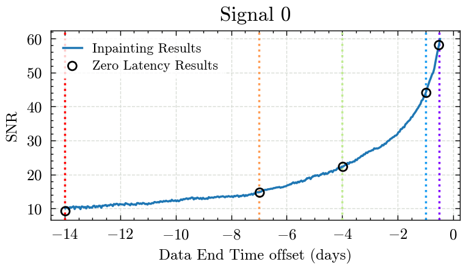
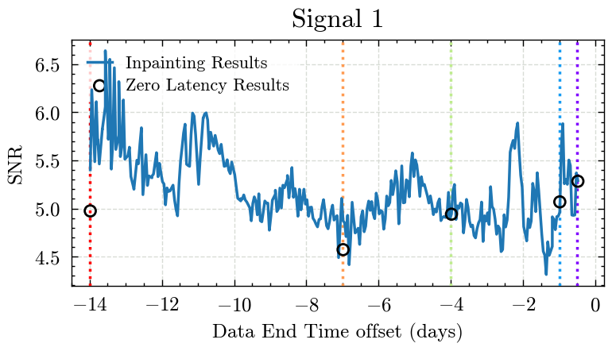
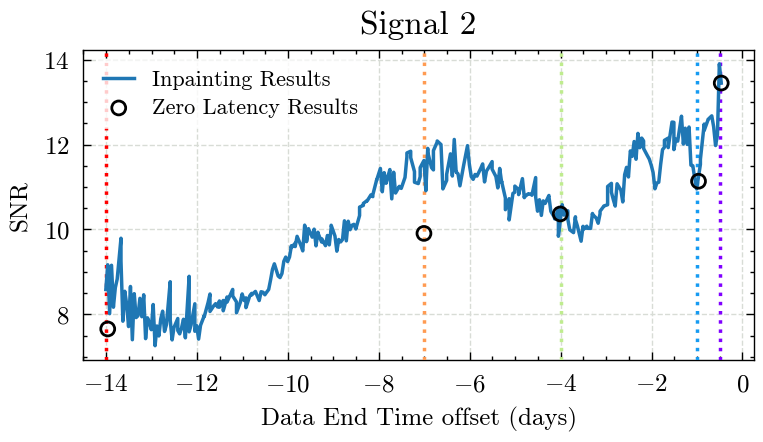
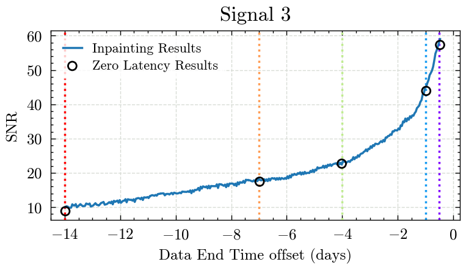
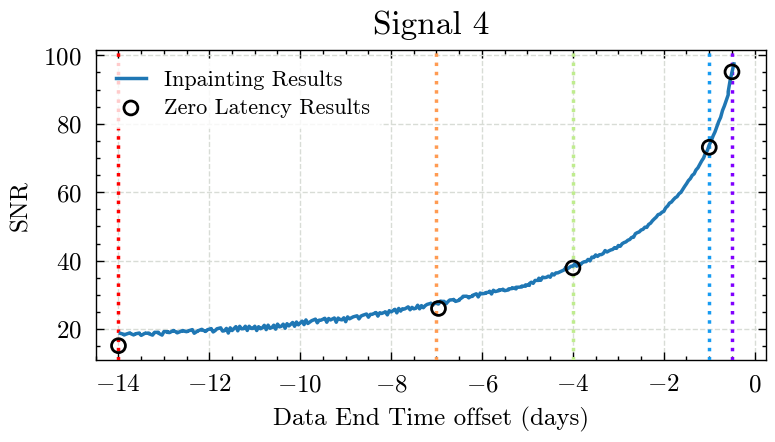
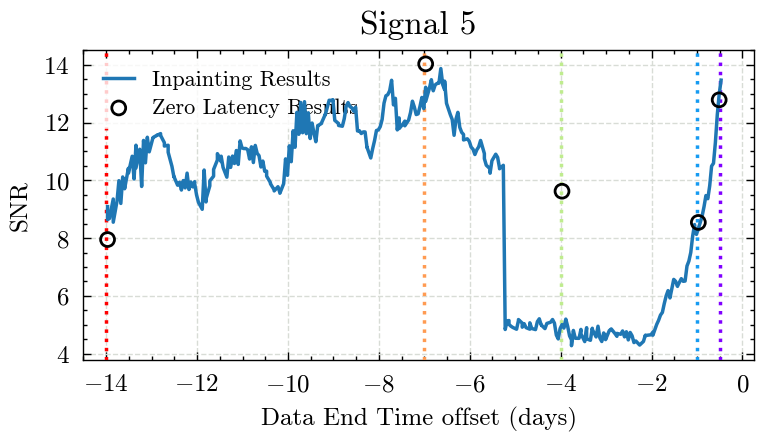
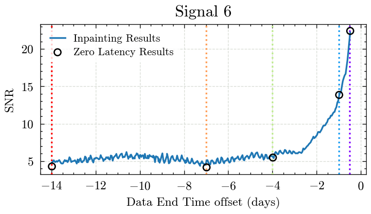
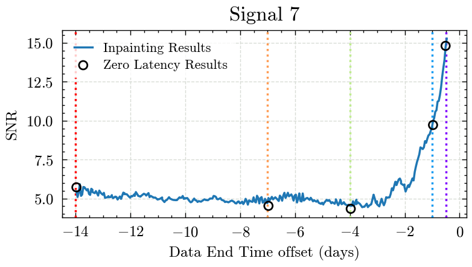
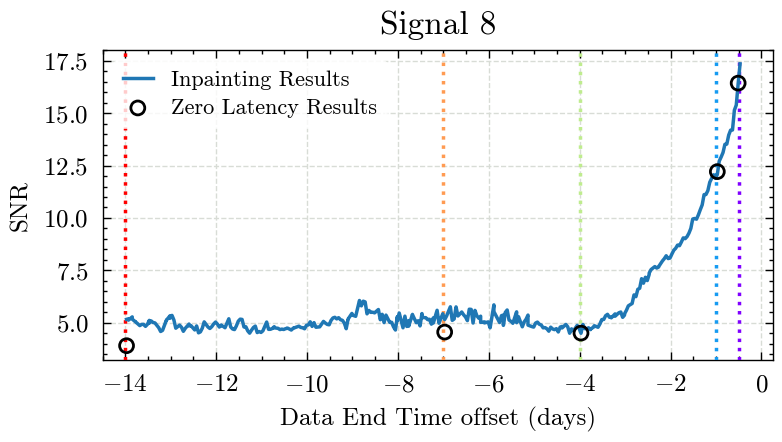
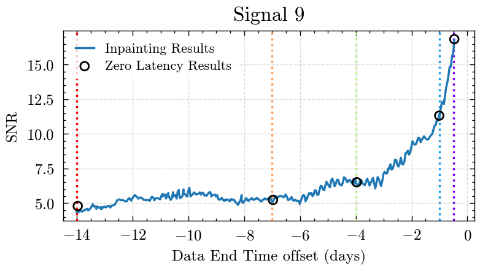
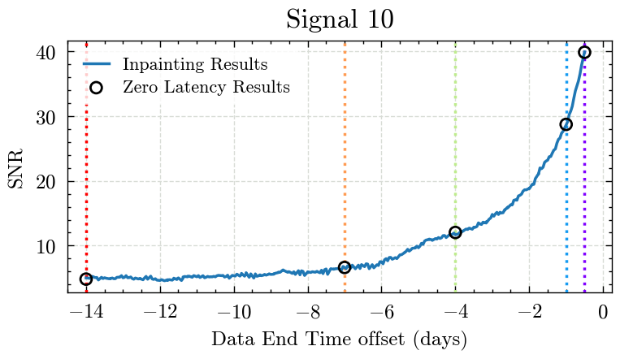
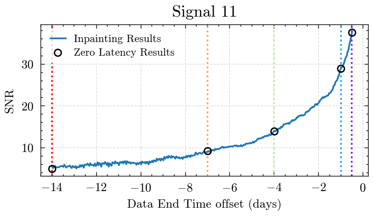
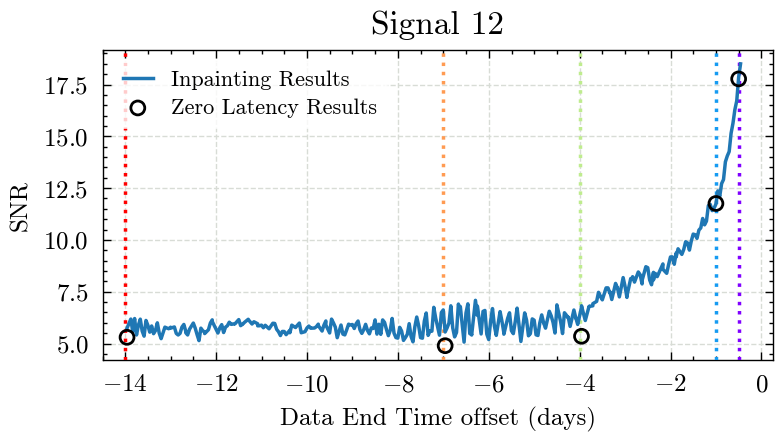
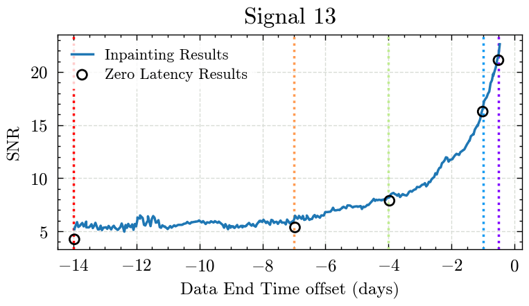
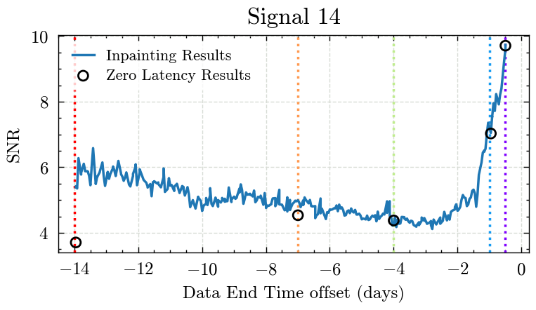